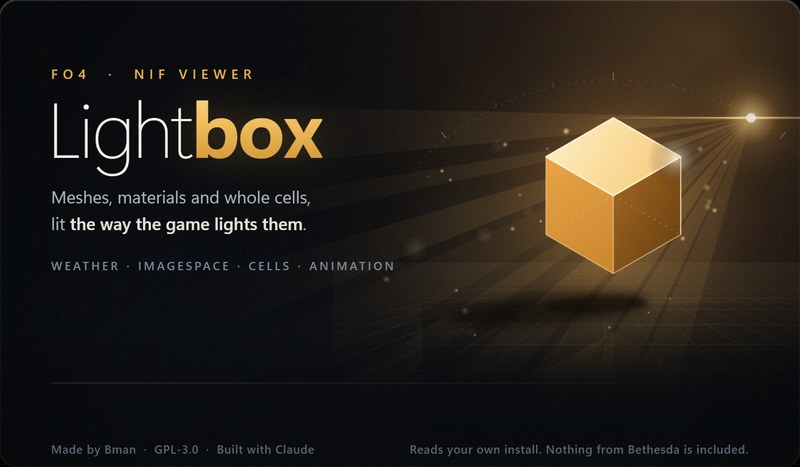

BeforeAfter
Before / afterdrag the line · hold B for before · R reloads
Drop a .nif to open it

A model viewer for Fallout 4 that actually tries to look like the game. Open any mesh from your install, throw it on a body, drop it into a real cell and check it under the game's own weather, time of day and lighting. You can even walk around in it. The sun, shadows, fog and tonemapping were tuned against real in-game screenshots, not eyeballed.
Nothing from Bethesda ships with this. Every mesh, texture, weather and cell gets read straight out of your own Fallout 4 folder while it runs.
FO4 Lightbox stands on the work of a lot of generous people: modders who mapped Fallout 4's file formats and gave their tools away, researchers who published the methods it draws with, and players who tried it and told us what broke. Thank you, every one of you.
Each one written fresh from the published method: